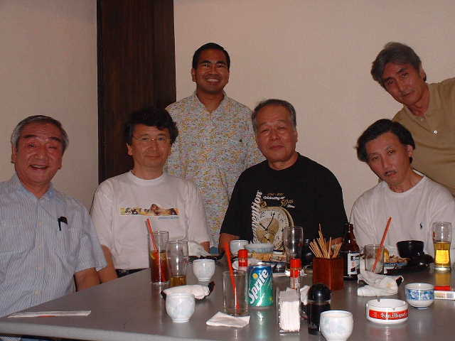
JA1HBC/DU1、DU1ZV、DU1EV、JA1RJU、JA1NXK、JA1SLV/DU1

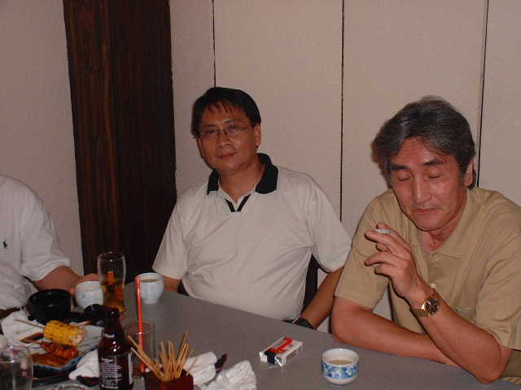
(左から)JA1HBC/DU1、DU1EV、JA1RJU /DU1NJG(左)、JA1SLV/DU1
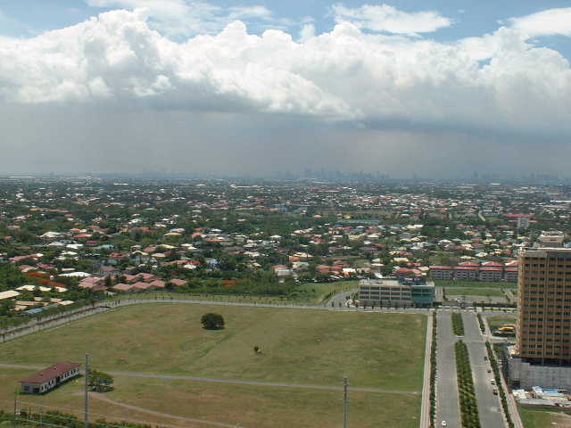
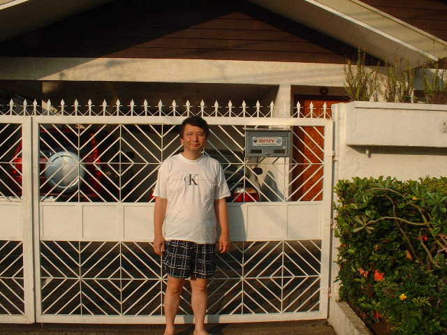
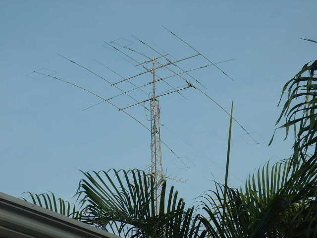
|
◎ Manila訪問
2002年6月26日から30日までの5日間、フィリピンの首都マニラを訪問した。 |
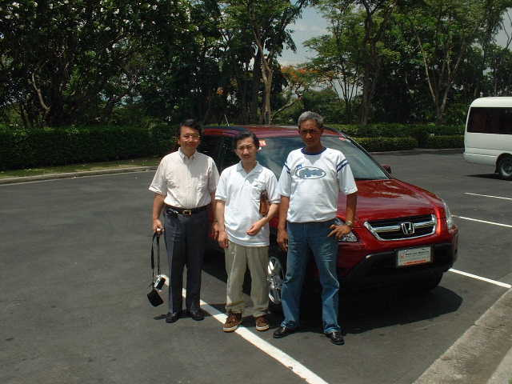
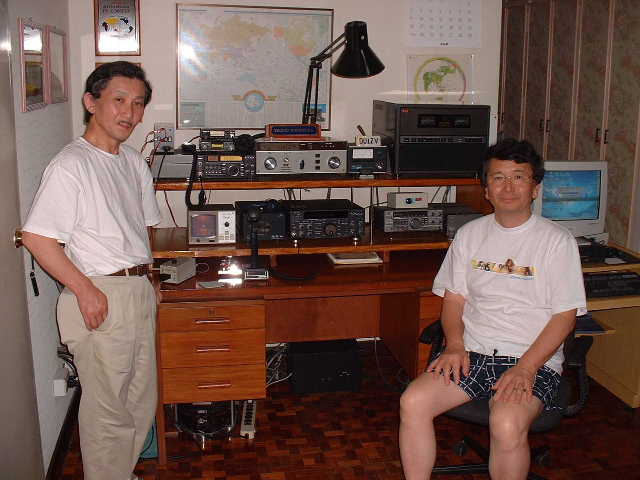
|
◎ Eyeball QSO
フィリピン到着初日のミーティングは、DU1ZV(JA1BRK)・米村さん、日本から同行したJA1NXK・荻野さんと私、
地元からは6mでアクティブなDU1EV・Eddie、JA1HBC/DU1・壺川さん、DU1NJG・Archie、
JA1SLV/DU1・榊さんらがマニラ市内の日本料理店「AKIYOSHI」に集まった。 |


|
翌日はマニラ市の北側のケソン市へDU1SAN(Boysan)を訪ねた。
Boysanは前PARAの会長だが、6mでもアクティブにQRVしていたことがあるので記憶されている局も多いはず。
現在はタワーの上には6mのアンテナは無かったが、HF帯、RTTYには良くQRVしている。 ハムの他に電動ミニカーの収集とレースが趣味で、自宅の地下にある10レーンほどのボーリング場のフロアーに、 2面のレース用のコースが設置されていた。 |
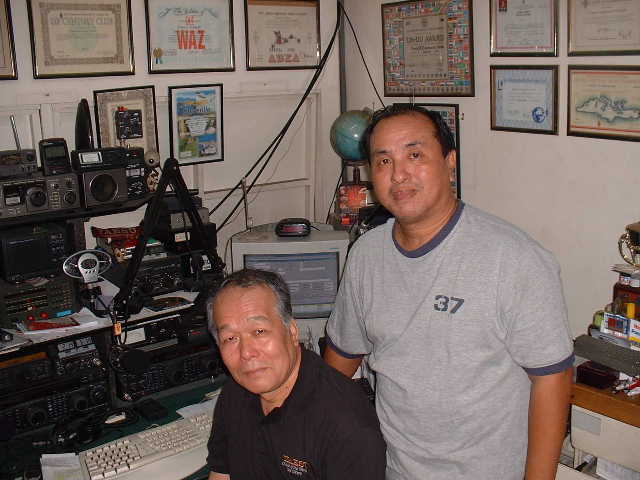
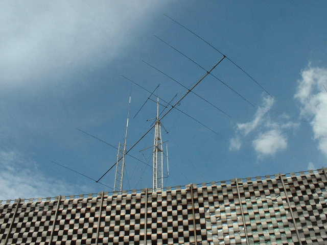
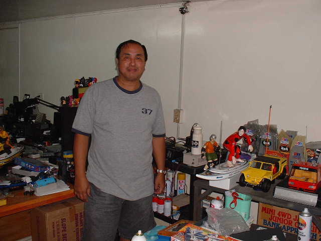
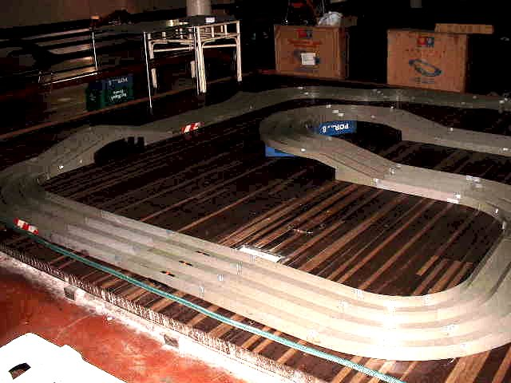
|
帰国する前日の29日、マニラから車で2時間ほど南方向の高級リゾート地に日本人のご夫婦を訪ねた。
この地に長年お住まいの竹内さんは、7L2JQM/DU1のコールサインでHF帯で運用していた事もあるのでQSOされた方も多いはず。
ただし、この日のわれわれの訪問の目的は、竹内さんのアンテナを撤去することだった。
海を見下ろすゴルフ場に接する傾斜地の豪邸に建てられたタワーとアンテナは壮観だったが、
最近になって向かいに引っ越してきた"隣人"から、アンテナが景観を損ねるとクレームがついたため、
法律的には問題ないのだが"近所付き合い"を損ねたくないとの理由で、撤去に踏み切ったとの事。 炎天下のタワーの上で4人掛かりでの作業だった。 落雷で破損したV/UHF用のGPと、5eleのHF帯マルチバンド・アンテナとマストを数時間掛けて撤去したが、 タワーはそのまま残し、再開の"道"を残して置く事になった。 |
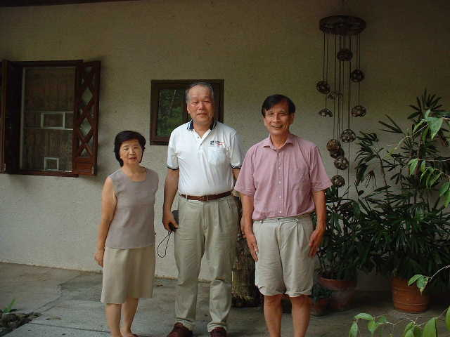
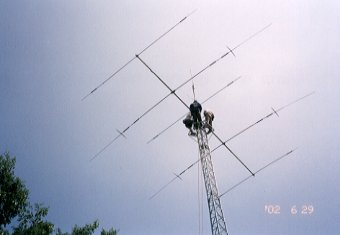
| フィリピンでは現在米国人以外の外国人のポータブル運用(DU1/*****など)の免許更新がストップされているとの事で、 フィリピンの資格試験に合格して免許を受けている局(DU1ZVなど)以外の運用は制限されている。 短期間の外国人(日本人を含む)の訪問者は、現地のクラブ局か個人局からゲスト運用する以外、 当分の間QRVは出来なくなった。(De JA1RJU) |
 |
Visited Manila |